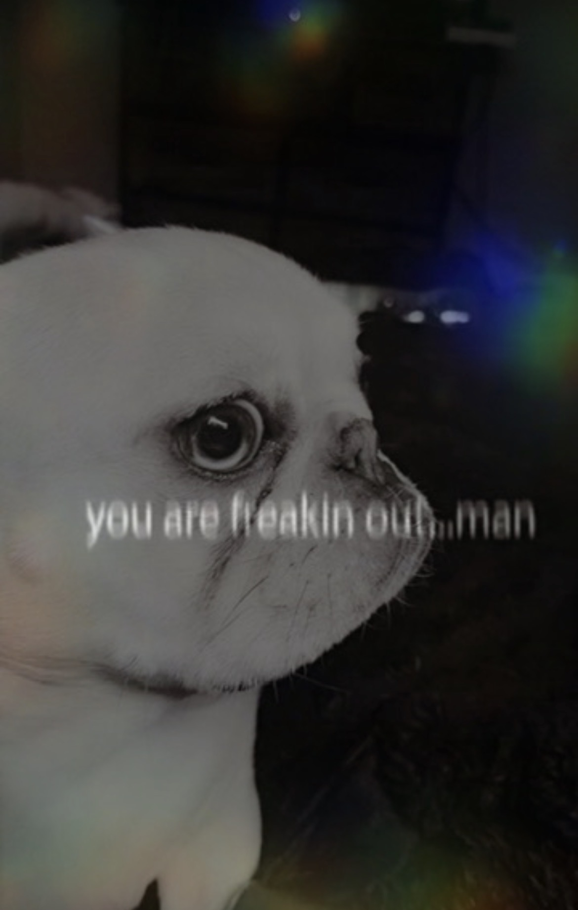
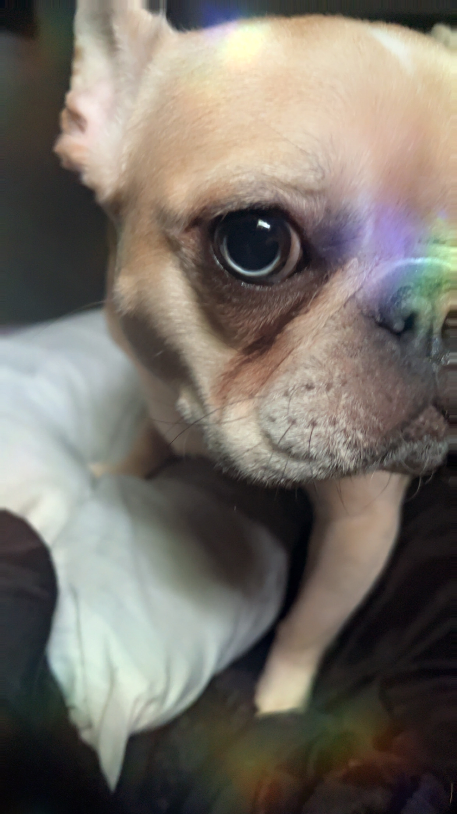
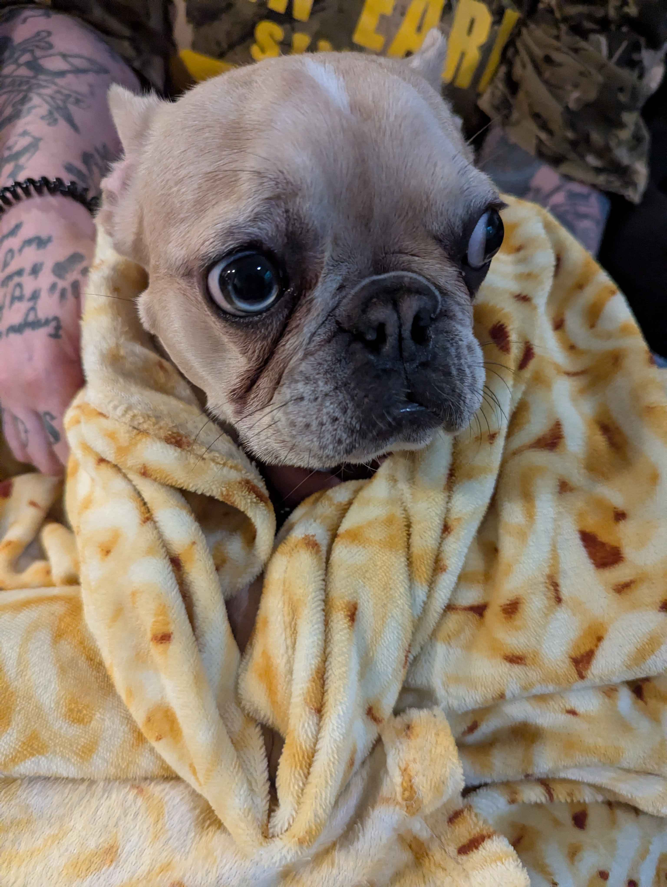
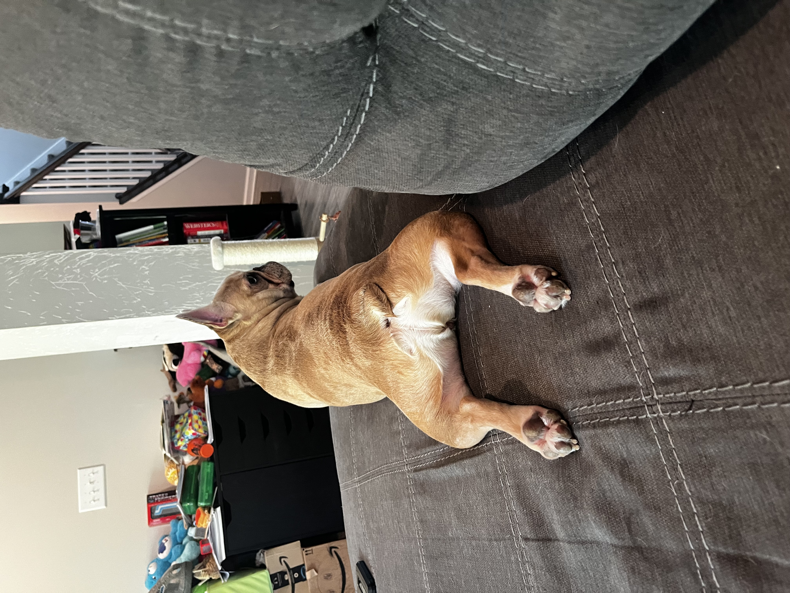

The Youngest Child and Ruler of the Kingdom

Born: November 22, 2025
Guardian of blankets.
Destroyer of squeaky toys.
Professional nap expert.
"You are freakin out, man."
Queen Muffin Hecuba is the Youngest Child.
Queen Muffin is not a dog. She is the Youngest Child.
The following rankings have been established by Queen Muffin Hecuba and are not subject to appeal.
The Crown accepts no responsibility for hurt feelings resulting from these rankings.
Decree I:
<
Decree II:
The bed, couch, blankets, and pillows belong exclusively to Queen Muffin.
Decree III:
Meals lacking blueberries and salmon oil are hereby rejected.
Decree IV:
Mother shall serve as the Royal Petter and Snuggle Companion only in the unfortunate absence of more desirable subjects.
Decree V:
Any human receiving excessive attention shall be donkey kicked accordingly.
Decree VI:
Farts shall be released without warning and denied without evidence.
Decree VII:
Panic among humans shall be met with the royal wisdom: "You are freakin out, man."
Decree VIII:
No petting of cats shall occur when one could instead be petting Queen Muffin.
Decree IX:
No subject shall remove Queen Muffin from any lap for any reason whatsoever, including the alleged necessity of going potty.
Decree X:
During times of rain, drizzle, dampness, puddles, or suspicious moisture, Her Majesty shall not be expected to place her royal feet upon wet ground.
Decree XI:
Any attempt to relocate Her Majesty from a sufficiently comfortable lap shall be considered an act of rebellion against the Crown.
Decree XII:
The finest location upon the couch shall be reserved exclusively for Queen Muffin beside her preferred human companion, preferably anyone other than Mother.
Decree XIII:
Upon entering any residence, Her Majesty's harness shall be removed immediately.
Decree XIV:
No subject shall complain of Her Majesty's snoring, snorting, grumbling, or other sounds of royal slumber.
Decree XV:
Any subject rendered excessively warm during the night by Queen Muffin's presence shall endure such discomfort without complaint.
Decree XVI:
The Sacred Ramen Blanket shall accompany Her Majesty during all naps.
Decree XVII:
Upon issuing the Royal Uppies Request, Queen Muffin shall be immediately carried by the nearest available subject.
Decree XVIII:
Her Majesty shall be gently lifted onto and from beds, couches, and other elevated royal furnishings.
Decree XIX:
Queen Muffin reserves the right to inspect, sample, and approve all foods consumed by her subjects except chicken.
Decree XX:
No subject shall falsely declare any food to be chicken for the purpose of denying Queen Muffin her rightful portion.
Decree XXI:
Queen Muffin shall be securely placed within her royal car seat and properly fastened prior to all journeys undertaken with Mother due to Mother's questionable driving abilities.
Decree XXII:
Queen Muffin shall spend no fewer than three days of every seven with her Other Mother at the Other House.
Decree XXIII:
Father shall retain the position of Most Beloved Parent. Both Mothers are expected to accept this unfortunate reality with grace and dignity.
Decree XXIV:
Any couch occupied by Queen Muffin shall immediately become property of the Crown. Human subjects may occupy any remaining space only at Her Majesty's discretion.
The Crown accepts no responsibility for hurt feelings resulting from these rankings.
Historical portraits and official records of Queen Muffin Hecuba throughout her reign.
The Oracle Speaks

Royal Inspection

Keeper of the Sacred Ramen Blanket

The Royal Sploot
"I built an online constitutional monarchy for my French bulldog."